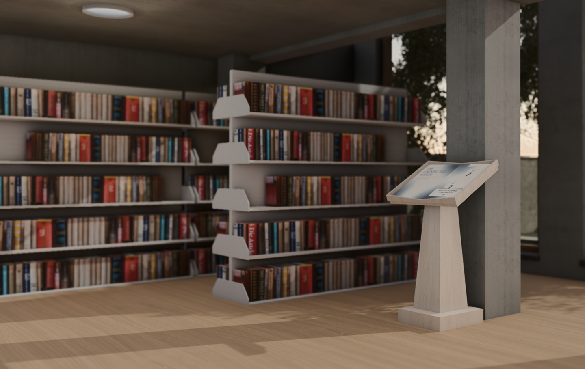
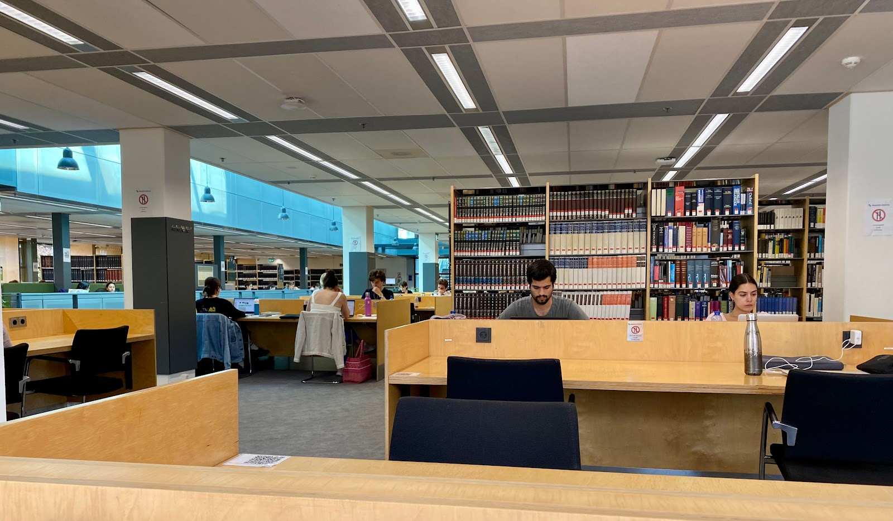
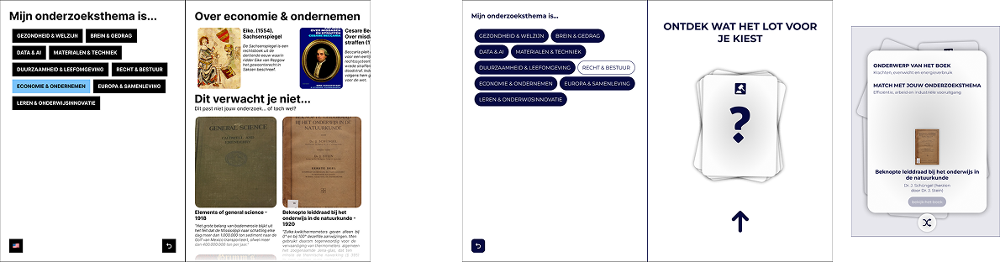
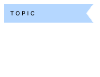
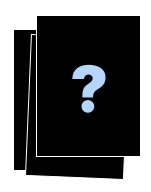
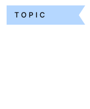

To better understand the problem, we visited the special collection in the university library and explored the books ourselves.


An interactive installation that encourages students to discover unexpected connections between modern research topics and books from the university's historical collection.
DURATION
10 weeks
TEAM
4 students
CLIENT
Maastricht University Library
- Special Collection
The university library holds a large collection of historical books, but the curators felt students
rarely engaged with it.
Many students either did not know the collection existed, or assumed that the books were
outdated
and irrelevant to modern research topics.
To better understand the problem, we visited the special collection in the university library and explored the books ourselves.
We also conducted short interviews with students studying in the library, asking about their awareness and perception of the collection.

After the research we discovered most students already knew the collection existed, but did not see
how old books could be relevant for their current studies.
Students also expressed interest in finding unique and surprising sources, but said they did not
have time to search for them.
With these insights we can start the creative provcess.
STUDENTS ALREADY KNOW THE COLLECTION EXISTS
STUDENTS WANT MORE UNIQUE SOURCES BUT LACK TIME
OLD BOOKS FEEL IRRELEVANT TO THEIR TOPIC

Before we got to our final concept, we went through many iterations.
For example, our first prototype presented users with a list of books related to their topic of choice.
However, this approach
did
not create the sense of an unexpected surprise we were aiming for.
Two weeks before the final deadline we decided to redesign the interaction and introduce the card
metaphor.
Drawing a card reinforces the idea of discovering something unexpected.

Choose a topic

Draw a card
Unexpected book

Discover the connections
We designed an interactive installation placed
on a column inside the library. Students select a research topic and then draw
a digital card.
The system reveals an unexpected match, a book
from the historical collection that belongs to a
different subject but still connects to the topic
in a meaningful way.
Example:
A book about geography might contain insights
into economic development, making it relevant
for economics students.
The final design features a sleek interface with a card-based interaction. The installation is designed to be intuitive and engaging, encouraging students to explore the special collection and discover unexpected connections to their research topics.